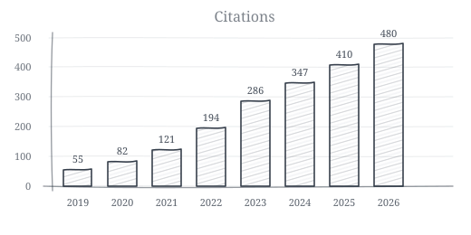

Publications
extraordinary claims require extraordinary evidence

First Author
- Santiago, P.H.R., A Sawyer, A Bauer, E Fox, L Jamieson (2026). Getting to the causes of depression: regime-dependent causal discovery of an N-of-1 study. OSF, 2026.
- Santiago, P.H.R., A Sawyer, X Ju, D Haag, A Bauer, N Reid, L Jamieson (2026). The challenges of conduct problems prediction: a causal fairness case study of the Longitudinal Study of Australian Children. OSF, 2026.
- Santiago, P.H.R., X Ju, X Vasquez, H Shen, L Jamieson, HW Elani (2026). The Development of a Large Language Model-Powered Chatbot to Advance Fairness in Machine Learning. AI 7 (3), 90, 2026.
- Santiago, P.H.R., Soares, G., McCormick, K., Gregory, T., Sawyer, A., Smithers, L., & Jamieson, L. (2026). The longitudinal network of social and emotional development in middle childhood. Journal of Applied Developmental Psychology, 103, 101925.
- Santiago, P.H.R., Sawyer, A., Sawyer, M., Lawrence, D., Rossoni, L., Fox, E., & Jamieson, L. (2026). Can the Strengths and Difficulties Questionnaire predict depression among Australian adolescents? A Markov Blanket structure learning approach. Measurement: Interdisciplinary Research and Perspectives, 1-23.
- Santiago, P.H.R., Ju, X., Jamieson, L., & Elani, H. (2026). Estimating the causal effect of sugar consumption on dental decay: A longitudinal targeted maximum likelihood estimation study. AJE Advances: Research in Epidemiology, uuag.g003.
- Santiago, P.H.R., Sawyer, A., Hedges, J., Sawyer, M., & Jamieson, L. (2025). A network cross-cultural validation of the Parenting Sense of Competence Scale between Aboriginal and Torres Strait Islander and non-Aboriginal and Torres Strait Islander Australians. First Nations Health and Wellbeing - The Lowitja Journal, 3, 100058.
- Santiago, P.H.R., Smithers, L., Townsend, M., Quintero, A., Sawyer, A., Soares, G., McCormick, K., Procter, A., & Jamieson, L. (2025). The longitudinal network of peer problems and emotional symptoms among Australian adolescents: Bayesian structure learning of directed acyclic graphs. Developmental Psychology.
- Santiago, P.H.R., Soares, G., Quintero, A., & Jamieson, L. (2024). Comparing the Clique Percolation algorithm to other overlapping community detection algorithms in psychological networks: A Monte Carlo simulation study. Behavior Research Methods, 56(7), 7219-7240.
- Santiago, P.H.R., Smithers, L., Roberts, R., & Jamieson, L. (2023). Psychometric properties of the Social Support Scale (SSS) in two Aboriginal samples. PLOS ONE, 18(1), e0279954.
- Santiago, P.H.R., Manzini, D., Haag, D., Roberts, R., Smithers, L.G., & Jamieson, L. (2022). Exploratory graph analysis of the Strengths and Difficulties Questionnaire in the Longitudinal Study of Australian Children. Assessment, 29(8), 1622-1640.
- Santiago, P.H.R., Soares, G., Smithers, L., Roberts, R., & Jamieson, L. (2022). Psychological network of stress, coping and social support in an Aboriginal population. International Journal of Environmental Research and Public Health, 19(22), 15104.
- Santiago, P.H.R., Milosevic, M., Ju, X., Cheung, W., Haag, D., & Jamieson, L. (2022). A network psychometric validation of the Children Oral Health-Related Quality of Life questionnaire among Aboriginal and/or Torres Strait Islander children. PLOS ONE, 17(8), e0273373.
- Santiago, P.H.R., Macedo, D.M., Haag, D., Roberts, R., Smithers, L., Hedges, J., & Jamieson, L. (2021). Exploratory graph analysis of the Strengths and Difficulties Questionnaire for Aboriginal and/or Torres Strait Islander children. Frontiers in Psychology, 12, 573825.
- Santiago, P.H.R., Quintero, A., Haag, D., Roberts, R., Smithers, L., & Jamieson, L. (2021). Drop-the-p: Bayesian CFA of the Multidimensional Scale of Perceived Social Support in Australia. Frontiers in Psychology, 12, 542257.
- Santiago, P.H.R., Haag, D., Macedo, D.M., Garvey, G., Smith, M., Canfell, K., Hedges, J., & Jamieson, L. (2021). Psychometric properties of the EQ-5D-5L for Aboriginal Australians: A multi-method study. Health and Quality of Life Outcomes, 19(1), 81.
- Santiago, P.H.R., Nielsen, T., Smithers, L., Roberts, R., & Jamieson, L. (2020). Measuring stress in Australia: Validation of the Perceived Stress Scale (PSS-14) in a national sample. Health and Quality of Life Outcomes, 18(1), 100.
- Santiago, P.H.R., Nielsen, T., Roberts, R., Smithers, L., & Jamieson, L. (2020). Sense of personal control: Can it be assessed culturally unbiased across Aboriginal and non-Aboriginal Australians? PLOS ONE, 15(10), e0239384.
- Santiago, P.H.R., Song, Y., Hanna, K., & Nair, R. (2020). Degrees of xerostomia? A Rasch analysis of the Xerostomia Inventory. Community Dentistry and Oral Epidemiology, 48(1), 63-71.
- Santiago, P.H.R., Roberts, R., Smithers, L., & Jamieson, L. (2019). Stress beyond coping? A Rasch analysis of the Perceived Stress Scale (PSS-14) in an Aboriginal population. PLOS ONE, 14(5), e0216333.
- Santiago, P.H.R., Meira, L.E., & Colussi, C. (2019). Feasibility evaluation of a mindfulness-based stress reduction program for primary care professionals in Brazilian National Health System. Complementary Therapies in Clinical Practice, 35, 8-17.
- Santiago, P.H.R., & Colussi, C. (2018). Feasibility evaluation of a mindfulness-based intervention for primary care professionals: Proposal of an evaluative model. Complementary Therapies in Clinical Practice, 31, 57-63.
Senior Author
- McCormick, K.M., Sethi, S., Haag, D., Macedo, D.M., Hedges, J., Quintero, A., Smithers, L., Roberts, R., Zimet, G., Jamieson, L., & Santiago, P.H.R. (2023). Development and validation of the COVID-19 Impact Scale in Australia. Current Medical Research and Opinion, 39(10), 1341-1354.
Other Collaborations
- EL Cordon, M McEvoy, T Skinner, C Chan, A Crombie, E Stanyer, S Begg, ... (2026). Revisiting dimensionality in measurement of sense of coherence among rural healthcare workers using network analysis. Scientific Reports, 2026.
- B Khor, GH Soares, DG Haag, G Mejia, L Luzzi, L Jamieson, ... (2026). Examining the Psychometric Properties of the Ultra‐Short Version of the Oral Health Impact Profile in Australia. Community Dentistry and Oral Epidemiology, 2026.
- Bauer, A., Santiago, P.H.R., Marques, E., Ferreira, T., & Peres, M. (2026). Capturing the complexity of bullying perpetration and victimisation: A network approach in a representative sample of Brazilian adolescents. International Journal of Bullying Prevention, 1-13.
- Bartholomaeus, V., Chronowski, N., Santiago, P.H.R., Kuring, J., & Sawyer, A. (2025). Equivalence of telehealth and face-to-face administration of the Wechsler Adult Intelligence Scale Fourth Edition (WAIS-IV). The Clinical Neuropsychologist, 39(5), 1073-1096.
- McCormick, K.M., Santiago, P.H.R., Sethi, S., Zimet, G.D., Jamieson, L., & Hedges, J. (2025). Network psychometric properties of the Multidimensional Scale of Perceived Social Support (MSPSS) in Aboriginal and/or Torres Strait Islander Australians: A hierarchical Exploratory Graph Analysis. Australian Psychologist, 60(4), 335-347.
- Malvaso, C., Montgomerie, A., Santiago, P.H.R., Lynch, J., & Pilkington, R. (2025). Risk of transitioning from out-of-home care into youth justice: Can formal risk prediction inform prevention opportunities? Journal of Criminology, 58(4), 662-688.
- Soares, G.H., Santiago, P.H.R., Poirier, B., Sethi, S., Haag, D., Cachagee, M., Flanagan, E., Cadet-James, Y., Hedges, J., & Jamieson, L. (2025). Community Warriors: Development and validation of a social and emotional well-being tool for Aboriginal and Torres Strait Islander children and youth. Australian Journal of Rural Health, 33(2), e70035.
- McCormick, K.M., Santiago, P.H.R., Sethi, S., Zimet, G.D., Jamieson, L., & Hedges, J. (2025). A network cross-cultural validation of the Multidimensional Scale of Perceived Social Support (MSPSS) among Aboriginal and Torres Strait Islander and non-Indigenous Australian adults. Australian Psychologist, 60(4), 348-362.
- Catapan, S.D.C., Sazon, H., Zheng, S., Gallegos-Rejas, V., Mendis, R., Santiago, P.H.R., & Kelly, J.T. (2025). A systematic review of consumers' and healthcare professionals' trust in digital healthcare. NPJ Digital Medicine, 8(1), 115.
- Catapan, S.D.C., Haydon, H.M., Santiago, P.H.R., Hickman, I.J., Webb, L., Isbel, N., Johnson, D.W., Mayr, H.L., Canfell, O.J., Scuffham, P., Burton, N.W., Smith, A.C., & Kelly, J.T. (2025). Development and validation of novel scales to measure trust and confidence in using telephone and video consultation scales in people with chronic kidney disease. Journal of Telemedicine and Telecare, 1357633X251338950.
- Nath, S., Zilm, P., Jamieson, L., Santiago, P.H.R., Ketagoda, D., & Weyrich, L. (2025). The influence of diet, saliva, and dental history on the oral microbiome in healthy, caries-free Australian adults. Scientific Reports, 15(1), 18755.
- Poirier, B., Hedges, J., Haag, D., Paradies, Y., Mackean, T., Bastos, J., Leane, C., Soares, G., Sethi, S., Manuela, J., Santiago, P.H.R., Owen, K., Bauer, N., Milne, J., Smith, A., Smith, K., Larkins, P., Cachagee, M., Garg, V., & Jamieson, L. (2025). Co-designing an antiracist dental health system: Protocol for an Aboriginal and Torres Strait Islander-led mixed methods study. JMIR Research Protocols, 14(1), e69012.
- Nath, S., Mittinty, M., Zilm, P., Santiago, P.H.R., Ketagoda, D.K.H., Jamieson, L., & Weyrich, L. (2025). Super donor assessment tool for oral microbiome transplantation. BMC Microbiology.
- Ju, X., Zhao, N., Santiago, P.H.R., Mejia, G., Jamieson, L., & Elani, H. (2025). Early childhood ear diseases and traumatic dental injuries: A machine learning approach. Dental Traumatology.
- Wang, A., Meade, M., Soares, G., Santiago, P.H.R., Haag, D., & Jamieson, L. (2025). Distribution of Specialist Orthodontic Service Provision Across South Australia According to Socio-Economic Status and Remoteness. Australian Journal of Rural Health, 33(2), e70040.
- Malvaso, C., Magann, M., Santiago, P.H.R., Montgomerie, A., Delfabbro, P., Day, A., Pilkington, R., & Lynch, J. (2024). Early versus late contact with the youth justice system: Opportunities for prevention and diversion. Current Issues in Criminal Justice, 36(1), 16-41.
- McCormick, K., Santiago, P.H.R., & Jamieson, L. (2024). The impact of COVID-19 on the oral health self-care practices of Australian adults. Journal of Public Health, 1-10.
- Snyder, G., Santiago, P.H.R., Sawyer, A., & Jamieson, L. (2023). A longitudinal mediation analysis of the effect of Aboriginal Australian mothers' experience of perceived racism on children's social and emotional well-being. Australian Psychologist, 58(5), 357-372.
- Poirier, B.F., Santiago, P.H.R., Kapellas, K., Jamieson, L., Neadley, K.E., & Boyd, M. (2023). Development of Social Determinants of Health Screening Tool (SDoHST): Qualitative validation with stakeholders and patients in South Australia. Current Medical Research and Opinion, 39(1), 131-140.
- Sethi, S., Santiago, P.H.R., Soares, G.H., Ju, X., Antonsson, A., Canfell, K., Smith, M., Garvey, G., Hedges, J., & Jamieson, L. (2023). Development and validation of an HPV infection knowledge assessment scale among Aboriginal and Torres Strait Islander Peoples. Vaccine: X, 14, 100317.
- Jamieson, L., Luzzi, L., Chrisopoulos, S., Roberts, R., Arrow, P., Kularatna, S., Mittinty, M., Haag, D., Santiago, P.H.R., & Mejia, G. (2023). Oral health, social and emotional well-being, and economic costs: Protocol for the second Australian National Child Oral Health Survey. JMIR Research Protocols, 12(1), e52233.
- Jamieson, L., Ju, X., Haag, D., Santiago, P.H.R., Soares, G., & Hedges, J. (2023). An intersectionality approach to Indigenous oral health inequities; the super-additive impacts of racism and negative life events. PLOS ONE, 18(1), e0279614.
- Hedges, J., Poirier, B., Soares, G., Haag, D., Sethi, S., Santiago, P.H.R., Cachagee, M., & Jamieson, L. (2023). Journeying towards decolonising Aboriginal and Torres Strait Islander oral health research. Community Dentistry and Oral Epidemiology, 51(6), 1232-1240.
- Song, Y., Santiago, P.H.R., Nair, R., Cho, H., & Brennan, D. (2023). Dental service sector and patient-reported oral health outcomes: Modification by trust in dentists. Frontiers in Public Health, 11, 1090911.
- Zakershahrak, M., Santiago, P.H.R., Sethi, S., Haag, D., Jamieson, L., & Brennan, D. (2022). Psychometric properties of the EQ-5D-3L in South Australia: A multi-method non-preference-based validation study. Current Medical Research and Opinion, 38(5), 673-685.
- Mittinty, M., Santiago, P.H.R., & Jamieson, L. (2022). Assessment of Pain-Related Fear in Indigenous Australian Populations Using the Fear of Pain Questionnaire-9 (FPQ-9). International Journal of Environmental Research and Public Health, 19(10), 6256.
- Haag, D., Santiago, P.H.R., Schuch, H., Brennan, D., & Jamieson, L. (2022). Is the association between social support and oral health modified by household income? Findings from a national study of adults in Australia. Community Dentistry and Oral Epidemiology, 50(6), 484-492.
- Soares, G.H., Bado, F.M.R., Tenani, C.F., Santiago, P.H.R., Jamieson, L.M., & Mialhe, F.L. (2022). A psychometric network perspective to oral health literacy: Examining the replicability of network properties across the general community and older adults from Brazil. Journal of Public Health Dentistry, 82(3), 321-329.
- Soares, G.H., Santiago, P.H.R., Biazevic, M.G.H., Michel-Crosato, E., & Jamieson, L. (2022). Dynamics in oral health-related factors of Indigenous Australian children: A network analysis of a randomized controlled trial. Community Dentistry and Oral Epidemiology, 50(4), 251-259.
- Nath, S., Poirier, B.F., Ju, X., Kapellas, K., Haag, D.G., Santiago, P.H.R., & Jamieson, L.M. (2021). Dental health inequalities among Indigenous populations: A systematic review and meta-analysis. Caries Research, 55(4), 268-287.
- Soares, G., Santiago, P.H.R., Werneck, R., Michel-Crosato, E., & Jamieson, L. (2021). A psychometric network analysis of OHIP-14 across Australian and Brazilian populations. JDR Clinical & Translational Research, 6(3), 333-342.
- Jamieson, L.M., Hedges, J., Ju, X., Kapellas, K., Leane, C., Haag, D.G., Santiago, P.H.R., Macedo, D.M., Roberts, R.M., & Smithers, L.G. (2021). Cohort profile: South Australian Aboriginal Birth Cohort (SAABC), a prospective longitudinal birth cohort. BMJ Open, 11(2), e043559.
- Smithers, L., Hedges, J., Santiago, P.H.R., & Jamieson, L. (2021). Dietary intake and anthropometric measurement at age 36 months among Aboriginal and/or Torres Strait Islander children in Australia. JAMA Network Open, 4(7), e2114348.
- Soares, G., Santiago, P.H.R., Biazevic, M., Michel-Crosato, E., & Jamieson, L. (2021). Do network centrality measures predict dental outcomes of Indigenous children over time? International Journal of Paediatric Dentistry, 31(5), 634-646.
- Nath, S., Ju, X., Haag, D., Kapellas, K., Santiago, P.H.R., & Jamieson, L. (2021). Prevalence of dental caries among Indigenous populations compared to non-Indigenous populations: A quantitative systematic review protocol. JBI Evidence Synthesis, 19(11), 3096-3101.
- Haag, D.G., Santiago, P.H.R., Macedo, D.M., Bastos, J.L., Paradies, Y., & Jamieson, L. (2020). Development and initial psychometric assessment of the race-related attitudes and multiculturalism scale in Australia. PLOS ONE, 15(4), e0230724.
- Soares, G., Santiago, P.H.R., Michel-Crosato, E., & Jamieson, L. (2020). The utility of network analysis in the context of Indigenous Australian oral health literacy. PLOS ONE, 15(6), e0233972.
- Ju, X., Santiago, P.H.R., Do, L., & Jamieson, L. (2020). Validation of a 4-item child perception questionnaire in Australian children. PLOS ONE, 15(9), e0239449.
- Macedo, D.M., Santiago, P.H.R., Roberts, R.M., Smithers, L.G., Paradies, Y., & Jamieson, L.M. (2019). Ethnic-racial identity affirmation: Validation in Aboriginal Australian children. PLOS ONE, 14(11), e0224736.
- Boing, A., Santiago, P.H.R., Tesser, C., Furlan, I., Bertoldi, A., & Boing, A. (2019). Prevalence and associated factors with integrative and complementary practices use in Brazil. Complementary Therapies in Clinical Practice, 37, 1-5.
Book Chapters
- Nielsen, T., & Santiago, P.H.R. (2020). Using Graphical Loglinear Rasch Models to investigate the construct validity of the Perceived Stress Scale. In Rasch Measurement (pp. 261-281). Springer.
Reports
- Malvaso, C., Santiago, P.H.R., Pilkington, R., Montgomerie, A., Delfabbro, P., Day, A., & Lynch, J. (2020). Youth Justice supervision in South Australia. BetterStart Child Health and Development Research Group, The University of Adelaide.
- Malvaso, C., Santiago, P.H.R., Pilkington, R., Montgomerie, A., Delfabbro, P., Day, A., & Lynch, J. (2020). The intersection between the Child Protection and Youth Justice systems in South Australia. BetterStart Child Health and Development Research Group, The University of Adelaide.